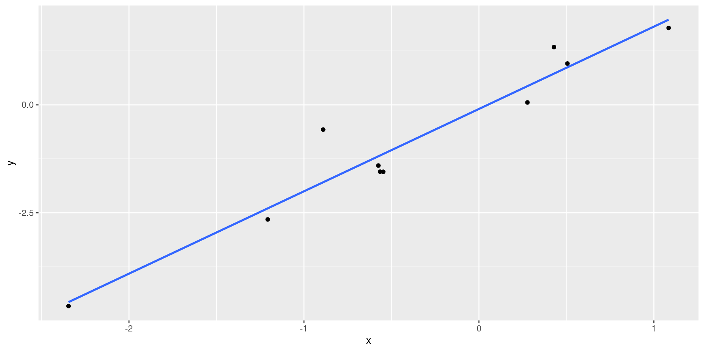
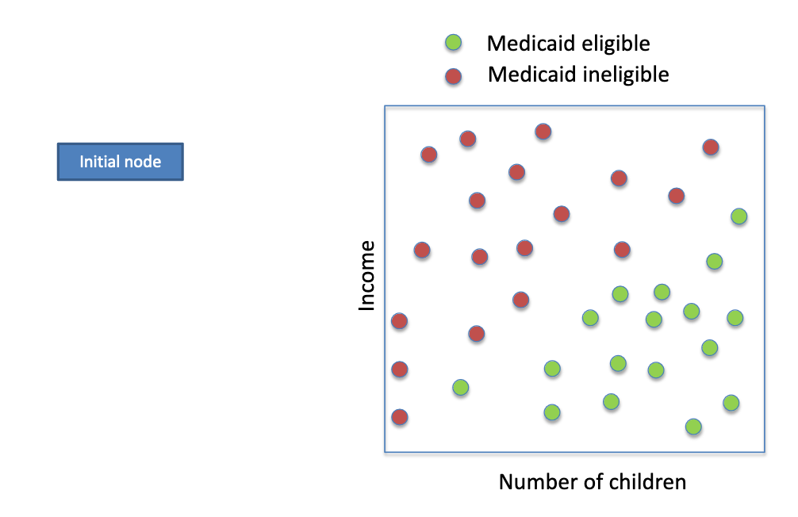
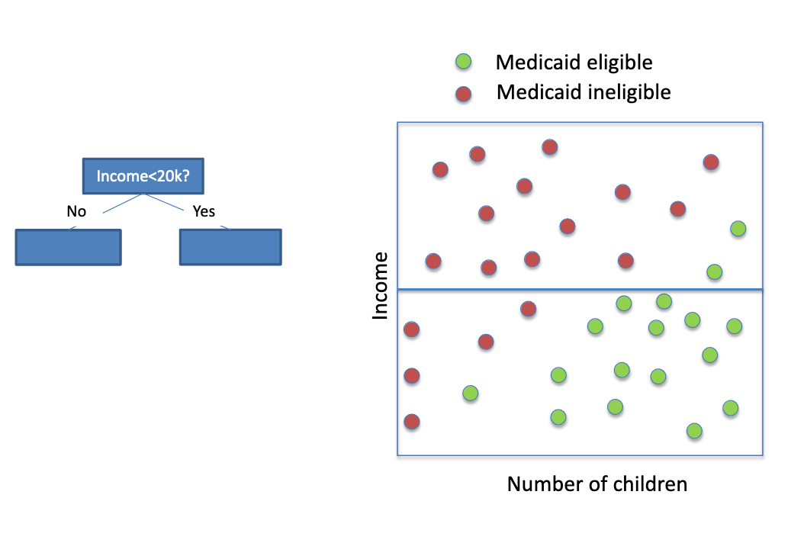
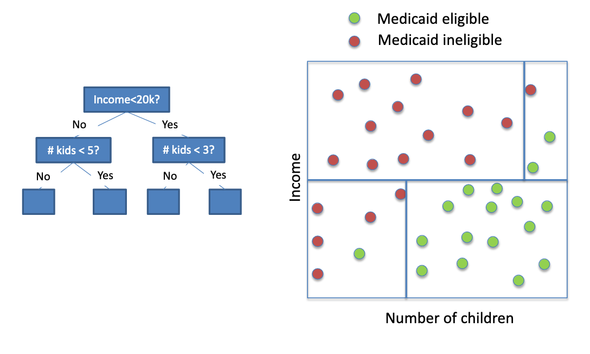
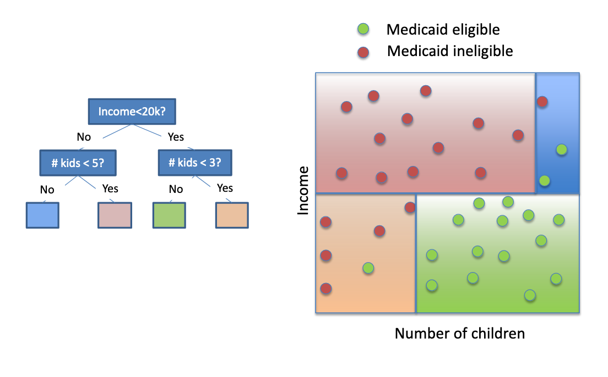
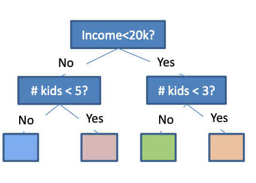
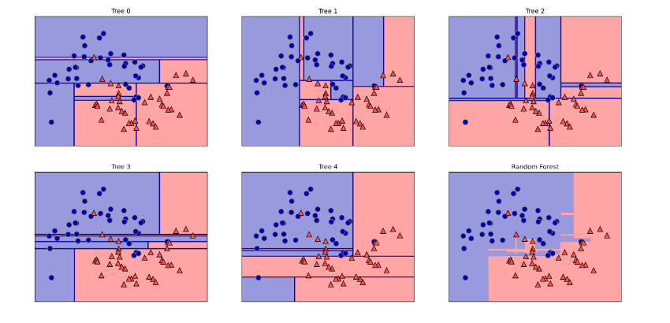

How prediction can be deployed into causal inference
Outline lecture 1
Prediction vs. Causality
Conceptual and practical (python!) intro to supervised machine learning methods
Lasso
Ridge
Elastic nets -Random Forests
Outline lecture 2
How modern prediction methods can be deployed in the service of causal inference
Post double selection lasso (PDS lasso)
Double/de-biased machine learning (DML) Machine Learning + Causal Inference II (starts May 15)
Predicting heterogeneous treatment effects
Random Causal Forests Prediction vs. Causality
Prediction vs. Causality
Imagine you are a life insurance underwriter. You receive an application for life insurance from someone with the following characteristics:
male
age 67
High blood pressure
high cholesterol
family
and . . .
was admitted to the hospital yesterday
Prediction vs. Causality
Now imagine you are a loved one of someone with the following characteristics:
and . . .
is having chest pains.
Should you take him to the hospital?
Prediction vs. Causality: Purpose
Prepare
A loan officer wants to know the likelihood of an individual repaying a loan based on income, employment, and other characteristics.
Influence
A mortgage lender wants to the likelihood of an know if direct debit will individual repaying a loan increase loan repayments based on income, employment, and other characteristics.
Prediction vs. Causality: Purpose
Prepare
In order to decide whether to invest in a start-up, an investor needs to know how likely the start-up is to succeed, given the entrepreneur’s experience and the characteristics of the industry.
Influence
An entrepreneur needs to to invest in a start-up, an know what the effect of investor needs to know how receiving funding from a likely the start-up is to private equity investor succeed, given the (rather than getting a loan) entrepreneur’s experience is on the ultimate success of and the characteristics of an enterprise. the industry.
Prediction vs. Causality: Purpose
Prepare
A bail hearing judge needs to know how likely a defendant is to flee before trial, given his or her charges, criminal history, and other characteristics Prediction vs. Causality: Purpose Prepare Influence
Influence
A policy maker needs to to know how likely a know the effect of being defendant is to flee before released on bail (rather than trial, given his or her detained) prior to trial on charges, criminal history, ultimate conviction and other characteristics
Prediction vs. Causality: Purpose
Prepare
A home seller wants to know what price homes with the characteristics of his or her home typically sell for
Influence
A home seller wants to know what price homes with the by how much installing new characteristics of his or her windows will raise the value home typically sell for of his or her home
Prediction vs. Causality: Purpose
Prepare
A Harvard admissions officer wants to know how likely an applicant with given credentials is to graduate in 4 years
Influence
A labor economist wants to wants to know how likely an know whether individuals of applicant with given a certain ethnic background credentials is to graduate in are less likely to get into 4 years Harvard than applicants with similar academic credentials
Prediction vs. Causality: Target
\(y_i = \alpha + \beta x_i + ε_i\)
\(\beta\) is the slope
\(\alpha + \beta x_i\) is the prediction

Prediction vs. Causality: Methods
Causality
: Randomised Control Trails (RCT)
Aluminum standard: Regression or IV strategies that approximate controlled experiments
Prediction vs. Causality: Where shall they meet?
We’ve seen that prediction and causality
answer different questions
serve different purposes
serve different purposes
seek different targets
use different methods
Different strokes for different folks, or complementary tools in an applied economist’s toolkit?
Illustrate using the Oregon Health Insurance Experiment (go to labs)
Where ML fits into causal inference
Traditional regression strategy: 1. Regress \(Y_i\) on \(X_i\) and compute the residuals,
Regress \(D_i\) on \(X_i\) and compute the residuals,
\[\tilde{D_i}=D_i - \hat{D}_i^{OLS}\]
\[\hat{D}_i^{OLS}=X'_i(X'X)^{-1}X'D\]
Regress
When OLS might not be the right tool for the job:
there are many variables in \(X_i\)
the relationship between \(X_i\) and \(Y_i\) or \(D_i\) may not be linear
Where ML fits into causal inference
ML-augmented regression strategy: 1. Predict \(Y_i\) using \(Xi\) with ML and compute the residuals, \[\tilde{Y_i}=Y_i - \hat{Y}_i^{ML}\]\[\hat{Y}_i^{ML}=\text{ prediction generated by ML}\]
Predict \(D_i\) using \(X_i\) with ML and compute the residuals, \[\tilde{D_i}=D_i - \hat{D}_i^{ML}\]
\[\hat{D}_i^{ML}=\text{ prediction generated by ML}\]
Regress on .
Most common ML methods in applied economics: Lasso, Ridge, Elastic net, Random forest
Getting serious about prediction
Goal: Predict an out-of-sample outcome Y
as a function, \(\hat{f}(X)\), of features \(X=(1,X_1,X_2,...,X_k)\)
Estimate the function \(\hat{f}\) (aka “train the model”) based on training sample\(\{ (Y_i,X_i);i=1,...,N\}\)
Cutting our losses
Want our prediction to be “close,” i.e. minimize the expected loss function: \(\text{min E}[L(f(x)-Y)|X=x]\)
Prediction problem solved if we knew \(f^*(x)=E[Y|X=x]\)
But we have to settle for an estimate: \(\hat{f}\) ;
\[E\left[(Y-\hat{f}(x))^2|X=x \right] \text{becomes:}\] - prediction bias squared (under the control of analyst) \[\left(E\left[\hat{f}(x)-f*(x)\right]^2 \right)\] - prediction variance (under the control of analyst) \[+ E\left[\left(\hat{f}(x)-E\left[\hat{f}(x)\right]\right)^2\right]\] - irreducible error \[E\left[\left(Y-f*(x)\right)^2|X=x\right]\]
Caveats and considerations: - Important to standardize regressors pre-ridge - Shrinks (biases) coefficients towards zero, but not all the way (unlike lasso)
Your Turn
Penalized Regression: Elastic Net
Combines lasso and ridge approaches
Theoretical definition:
Caveats and considerations: - Two tuning parameters: \(\alpha\) and \(\lambda\) - Important to standardize regressors pre-ridge - Zeros out many regressors, shrinks (biases) remaining coefficients towards zero
Your turn
Decision Trees

Decision Tree

Decision Tree

Decision Tree

Decision Tree

Where to split:
Choose the feature from \(\{ x_1,\dots,x_p \}\) and the value of that feature minimise MSE in the resulting child nodes
Tuning parameters
Max Depth
Min training obs per leaf
Min improvement in fit in order to go ahead with this split
Forest for the Trees

Value proposition: reduce variance by averaging together multiple predictions
The catch: individual trees need to be de-correlated
Algorithm:
Grow B trees, each on a different bootstrapped sample
At each split, consider only a random subset of features
Average together the individual predictions
Your turn
Where ML fits into causal inference (Recall)
ML-augmented regression strategy:
Predict \(Y_i\) using \(Xi\) with ML and compute the residuals, \[\tilde{Y_i}=Y_i - \hat{Y}_i^{ML}\]\[\hat{Y}_i^{ML}=\text{ prediction generated by ML}\]
Predict \(D_i\) using \(X_i\) with ML and compute the residuals, \[\tilde{D_i}=D_i - \hat{D}_i^{ML}\]
\[\hat{D}_i^{ML}=\text{ prediction generated by ML}\]
Regress on .
Two flavors of machine-assisted causal inference:
Post-double selection lasso (PDS lasso), introduced by Belloni, Chernozhukov, and Hansen (2014) (See Readings in repo)
Double/De-biased machine learning (DML), introduced by Chernozhukov, Chetverikov, Demirer, Duflo, Hansen, Newey, and Robins (2018) (See Readings in repo)
Machine-Assisted Causal Inference
No identification ex machina! Still rely on \[D_i \models (Y_i(0), Y_i(1)))| X_i\]
What variables to include in \(X_i\) ?
The omitted variables bias formula is our guide. Uncontrolled (bivariate) regression gives us: \[\hat{\delta}^{bivariate} \to \delta + \beta \frac{Cov(D_i,X_i)}{Var(D_i)}\]
We need to control for variables that
affect the outcome
are correlated with treatment
Beware of bad control: including post-treatment variables in \(X_i\)
PDS Lasso: Preliminaries
Begin with flexible version of our regression model: \[Y_i = \gamma D_i+g(X_i)+\epsilon_i\]
Approximate the two CEFs, \[m_D(X_i) \equiv E[D_i|X_i]\]\[m_D(X_i) \equiv E[D_i|X_i] = \gamma m_D(X_i)+g(X_i)\]
With a sparse linear approximation: \[m_Y(X_i)=X'_{i,\gamma Y} + r_i\]\[m_D(X_i)=X'_{i,\gamma D} +s_i\]
\(X_i\) should contain a dictionary of nonlinear transformations like powers and interactions
PDS lasso: The Recipe
PDS is implemented in three steps:
Lasso Yi on Xi , collect retained features in \(X^Y_i\)
Lasso Di on Xi , collect retained features in \(X^D_i\)
Regress Yi on Di and \(X^Y_i \cup X^D_i\) Caveats and considerations:
Standardizing controls pre-lasso is important
BCH have a formula for the penalty parameter, but cross-validation seems to work just fine I- Inference: just use robust SEs from last step!
DML: Preliminaries
Stick with flexible version of our regression model: \[Y_i=\gamma D_i + g(X_i) + \epsilon_i\]
Predict \(Y_i\) using \(Xi\) with ML and compute the residuals,
\[\tilde{Y_i}=Y_i - \hat{Y}_i^{DML}\]
\[\hat{Y}_i^{DML}=\text{ prediction generated by ML}\]
Predict \(D_i\) using \(X_i\) with ML and compute the residuals, \[\tilde{D_i}=D_i - \hat{D}_i^{DML}\]
\[\hat{D}_i^{DML}=\text{ prediction generated by ML}\]
Regress on .
\(\hat{D}_i^{DML}\) and _i^{DML} should be predictions generated by a machine learning model trained on a set of observations that does not include i. We accomplish this via cross-fitting
DML: Recipe
Divide the sample into K folds
For k = 1, . . . , K
Train a model to predict Y given X , leaving out observations i in fold k: ˆY −k (x)
Train a model to predict D given X , leaving out observations i in fold k: ˆD−k (x)
Form residuals ̃Yi = Yi − ˆY −k (Xi ) and ̃Di = Di − ˆD−k (Xi )
Regress ̃Yi on ̃Di .
Caveats and considerations:
Cross-validation to choose tuning parameters
Inference: use robust SEs from last step
In Conclusion
Learning outcomes:
Clarity on distinction between predictive and causal questions
Foot in the door with python implementations of some common modern supervised machine learning methods
Tools for using ML methods to control for high dimensional covariates in the service of causal inference Some workshops:
Use ML to predict heterogeneous treatment effects (e.g., random causal forests)